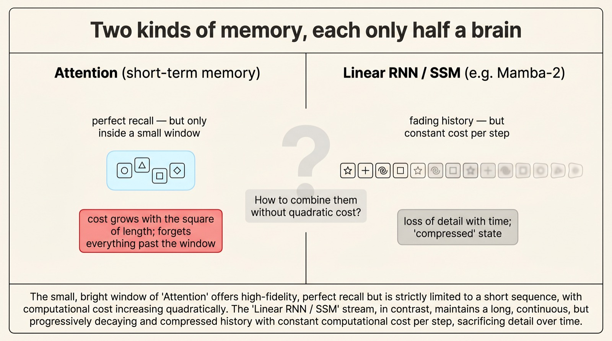
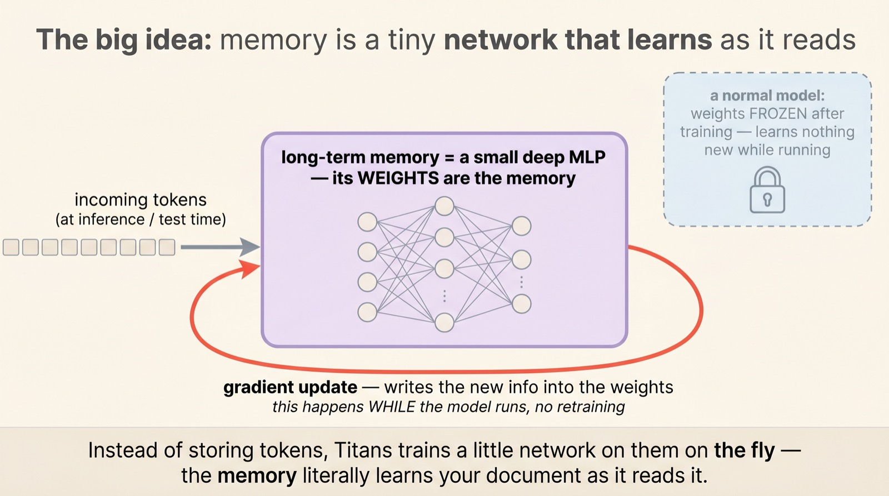
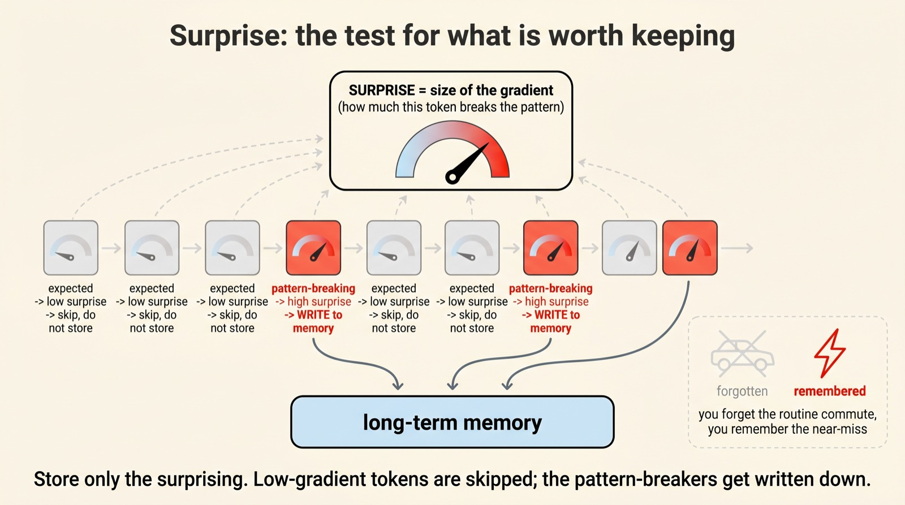
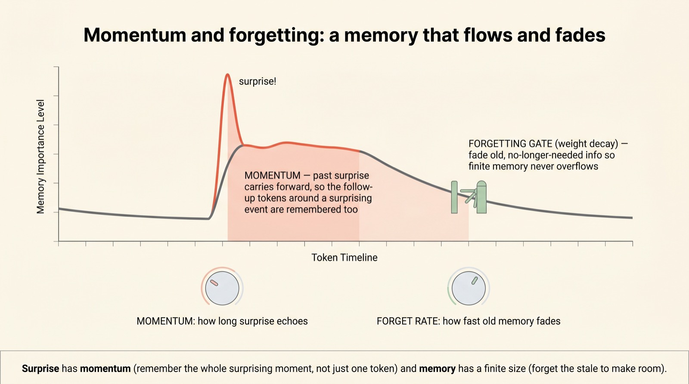
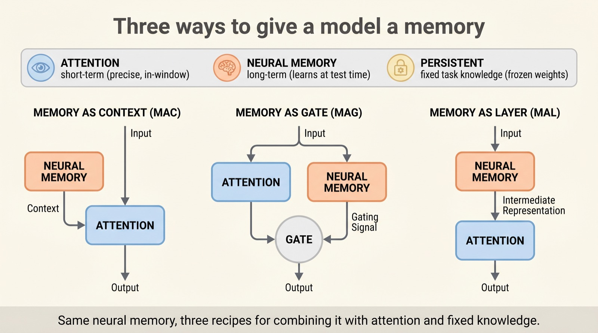
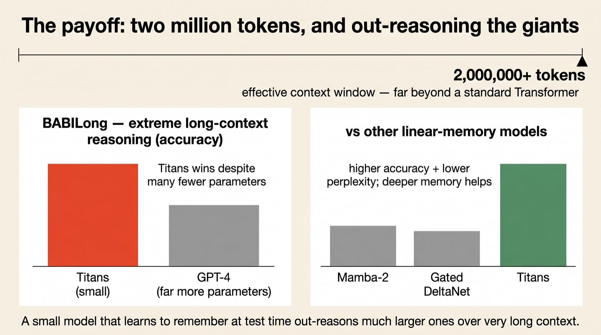

Teaching a model to remember while it reads
Learning to
remember
Every chatbot you've used has amnesia — once a fact scrolls out of its window, it's gone. Google's Titans give a model a second kind of memory: a little neural network that keeps learning while it runs, writing down only what surprises it. Here's how a small model with a memory out-reasons giants across two million tokens.
From Behrouz, Zhong & Mirrokni (Google Research). Titans pairs the precise short-term memory of attention with a deep long-term memory that updates by gradient descent at inference — gated by a brain-like "surprise" signal, with momentum and adaptive forgetting. The unifying theory behind it, MIRAS, argues every sequence model is secretly the same thing: an associative memory.
Scroll to begin.
↓
Two kinds of memory, each half a brain
Ask a language model about something you said forty thousand words ago and you'll often hit a wall. The model isn't being lazy — it has a specific kind of memory, and that memory has limits. Understanding those limits is the whole reason Titans exist, so it's worth being precise about them.
The memory inside a normal Transformer is attention. It is astonishingly precise: every token can look directly at every other token in the window, so nothing inside that window is blurred or approximated. But that precision is expensive — the cost grows with the square of the length — and the moment a token falls outside the window, it simply ceases to exist for the model. It's a brilliant short-term memory with a hard edge.
The usual alternative — linear RNNs and state-space models like Mamba-2 — fixes the cost. They stream through text cheaply, in linear time, never hitting a wall. But they pay for it by cramming everything they've ever seen into one fixed-size state. Squeeze a whole book into a single small vector and the early chapters arrive as a blur.

The human brain, the Titans authors point out, doesn't choose. It runs a short-term memory and a long-term memory side by side — one sharp and fleeting, one durable and compressed. The question driving Titans is disarmingly simple: why not give a model both?
Memory that learns as it reads
Here is the move that makes Titans different, and it is genuinely strange the first time you meet it. The long-term memory is not a buffer of stored tokens, and it is not a vector. It is a small neural network — a little multi-layer perceptron — and its weights are the memory.
Storing a fact means nudging those weights. As the model reads your document at inference time, the memory module performs a tiny gradient-descent step on each new piece of information, literally training itself on your input as it goes. The authors call this test-time memorization: the ability to keep learning while running, with no offline retraining.

Why a whole network instead of a vector? Expressive power. A single fixed state can only hold so much before it saturates; a deep little network can summarise large volumes of information and still keep the threads that connect tokens far apart. In the paper's ablations, the deeper the memory, the lower the perplexity — more layers, better recall.
Surprise: what's worth keeping
A memory that tried to store every token would fill up instantly and learn nothing. So Titans need a filter — a way to decide, token by token, what actually deserves to be written down. Their answer borrows straight from how your own memory works.
You forget the thousand ordinary moments of your morning commute. You vividly remember the one time a car swerved in front of you. The brain remembers what breaks the pattern. Titans measure exactly that, and they measure it with the one quantity the memory already produces: the gradient.
When a new token arrives, the memory network checks how wrong its current prediction is. If the token is expected, the error — and therefore the gradient — is small, and the model can safely skip it. If the token breaks the pattern, the gradient is large. That gradient magnitude is the surprise signal, and only the surprising tokens trigger a real write to memory.

It's an elegant trick: the same number that tells the network how to learn (the gradient) also tells it what is worth learning. No extra scorer, no separate model — surprise falls out of the math for free.
Momentum and forgetting
Raw surprise is a good start, but on its own it's too twitchy. Two refinements — both, again, lifted from how real memory behaves — turn it into something usable.
The first is momentum. A surprising event is rarely a single token; the moment that follows it matters too. After the car swerves, you remember the seconds afterward — your heart pounding, the horn, pulling over. So Titans let surprise carry forward: a spike doesn't just store one token, it keeps memory receptive for the tokens that follow, capturing the whole surprising episode rather than an isolated word.
The second is forgetting. Memory is finite; if you only ever write, you eventually overflow. Titans add an adaptive forgetting gate — effectively a weight decay — that gently fades information the model no longer needs, freeing room for what's ahead. As the authors put it, the ability to forget is just as important as the ability to remember.

Three ways to give a model a memory
So we have a neural long-term memory that writes the surprising, carries momentum, and forgets the stale. The last question is plumbing: where, exactly, does it sit relative to the attention the model already has? Titans offer three answers, plus one extra ingredient.
That extra ingredient is persistent memory — a set of fixed, learned weights that hold general, task-level knowledge, independent of any particular input. Think of it as the model's permanent know-how, sitting alongside the short-term attention and the adaptive long-term memory.
The three wirings differ in how the long-term memory meets attention. In Memory as Context (MAC), the memory summarises everything seen so far and hands that summary to attention as extra context — like a research assistant sliding a briefing across the desk, which attention can read or ignore. In Memory as Gate (MAG), attention and memory run as two parallel streams, blended by a gate. In Memory as Layer (MAL), the memory is simply stacked in as its own layer in the network.

The point of offering three isn't indecision — it's that "give the model a memory" is a design space, not a single switch. Different tasks reward different couplings of fast precise recall and slow durable memory.
The payoff
A clever mechanism is only worth as much as what it unlocks, so the numbers are the test. The headline is reach: Titans scale effectively to context windows beyond two million tokens — the territory of whole documents and genomes — while keeping the linear, parallelisable speed of a recurrent model rather than the quadratic cost of attention.
And reach is nothing without retention. On BABILong — a brutal benchmark that hides facts deep inside very long contexts and asks the model to reason across them — Titans outperform every baseline, including GPT-4, despite having a small fraction of the parameters. Across standard language modelling and zero-shot reasoning, they also beat the strongest linear-memory models of the moment, Mamba-2 and Gated DeltaNet.

It was all memory all along
The deepest idea here isn't Titans the architecture — it's the lens that comes with it. Alongside Titans, Google introduced MIRAS, a framework with a provocative claim: nearly every breakthrough in sequence modelling, from attention to Mamba to Titans, is secretly the same thing — an associative memory module wearing different clothes.
MIRAS says any such module is just four design choices: the memory architecture (a vector, a matrix, or a deep network), the attentional bias (what it tries to learn), the retention gate (how it forgets), and the memory algorithm (how it updates). Pick differently and you rediscover old models — or invent new ones. It even frees memory from the usual squared-error objective: variants like YAAD use a gentler Huber loss so a single typo doesn't derail the memory, while others tighten it for stability.
That reframing is the part to carry away. For years "context length" was a number on a spec sheet. Titans suggest the better question is about the quality of a model's memory — what it chooses to store, what it lets fade, and how it keeps learning after training is over. The era of the frozen, forgetful model may be ending; the one that follows is built, quite literally, to remember.